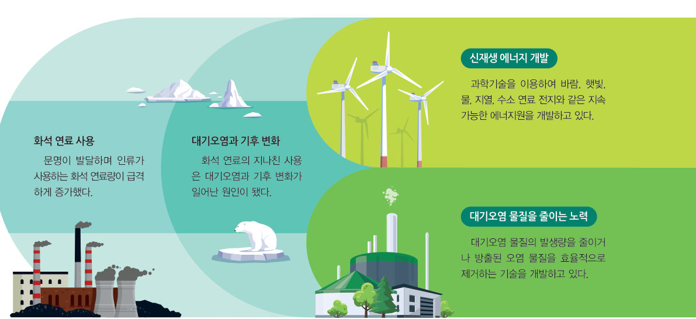
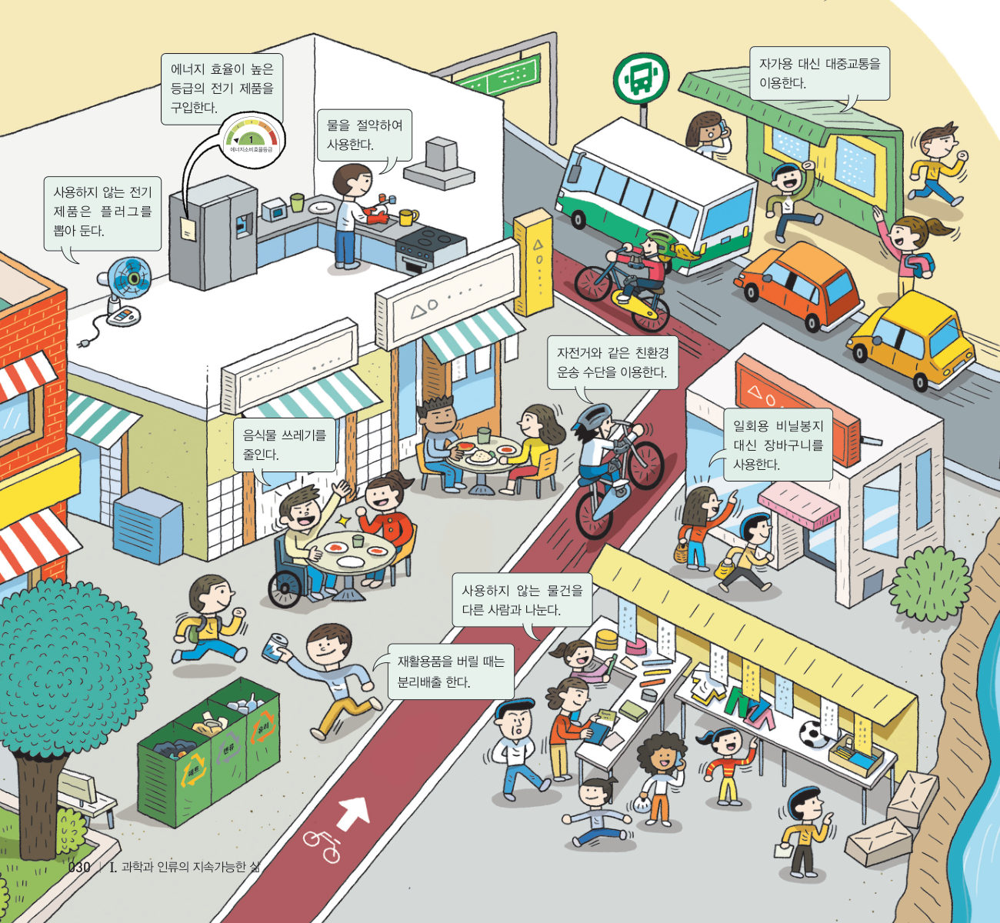
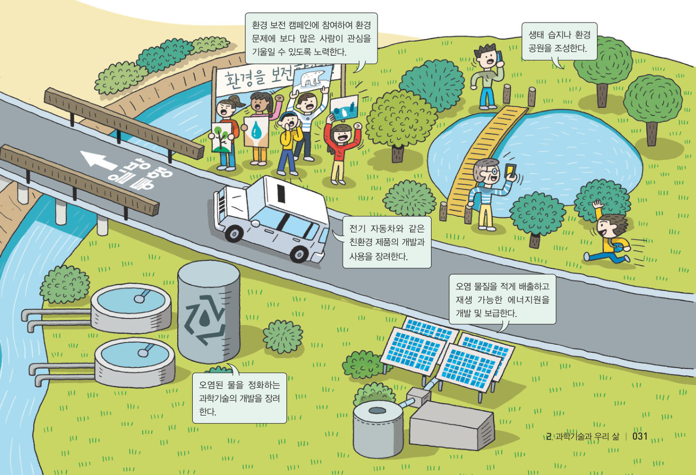

살아있는 교과서 · Ⅰ. 과학과 인류의 지속가능한 삶 · 2. 과학기술과 우리 삶 · 02 28~32쪽 · 대단원 마무리
인류의 지속가능한 삶
“야호, 내가 우승했다!” 지속가능한 삶 우승자는 다회용 컵! 다회용 컵을 사용하는 것은 지속가능한 삶과 어떤 관련이 있을까? 가상 에너지 도시에서 과학기술의 역할을 확인하고, 우리 반 약속을 정해 직접 실천해 보자.
🎯 이 단원을 배우면 — 지속가능한 삶을 위한 과학기술의 역할을 설명하고, 개인과 사회 차원의 활동 방안을 찾아 실천할 수 있다.
탐구지속가능한 삶을 위한 과학기술의 역할 알아보기 28~29쪽
지속가능한 삶을 위한 과학기술의 역할은 무엇인가?
인류는 더 나은 환경을 만들어, 현세대 이후에도 모두가 행복하게 살 수 있는 풍요로운 사회가 지속되도록 해야 한다. 이를 위해 고민하고 실천하는 삶을 지속가능한 삶이라고 한다. 그러나 현재 인류는 에너지 부족 문제나 해양오염, 대기오염, 토양오염과 같은 환경 문제에 마주해 있다.
준비물 스마트 기기
자료 수집 모둠별로 에너지나 환경과 관련된 문제를 한 가지씩 조사한다. (예: 해양오염을 일으키는 플라스틱)
자료 수집 과정 1에서 조사한 문제를 해결할 수 있는 과학기술을 조사한다.
지속가능한 삶의 관점에서 과학기술의 발전 방향은 어떠해야 할지 자신의 생각을 과학적으로 제시한다.
예) 해양오염을 일으키는 플라스틱 플라스틱은 수백 년 동안 썩지 않아, 바다로 흘러 들어가면 해양오염을 일으킨다. 특히 미세 플라스틱은 해양 생태계를 무너뜨리고 있다. 하지만 플라스틱은 가볍고 다양한 형태의 물건을 만들 수 있는 장점이 있다. 활동 도우미 자신의 생각을 정리할 때는 의견을 뒷받침할 과학적 근거를 찾고, 토의할 때는 의견을 논리적으로 제시한다.
조사한 문제
해결할 수 있는 과학기술
과학기술의 발전 방향 (나의 생각과 근거)
더 해 보기 · 플라스틱을 대체할 수 있는 소재의 특징 알아보기
플라스틱을 대체할 수 있으며 환경오염을 일으키지 않는 소재를 조사하고, 그 소재가 지속가능한 삶에 어떤 역할을 할지 토의해 보자.
💬정리해 볼까 · 협력적 소통 인류의 지속가능한 삶을 위한 과학기술의 중요성과 역할에 대해 토의한 내용을 정리해 보자.
교과서인류가 마주한 문제에서 과학기술의 역할 29쪽
과학기술은 인류가 마주한 문제에 대한 새로운 접근법과 해결 방안을 마련하는 데 중요한 역할을 한다. 인류는 그림 1-5와 같이 ●화석 연료를 오랜 시간 사용하여 생긴 에너지 문제와 환경 문제를 해결하는 데 과학기술을 활용하고 있다.

그림 1-5화석 연료 사용 → 대기오염과 기후 변화 → 신재생 에너지 개발 · 대기오염 물질을 줄이는 노력
●화석 연료 오래전 지구에 살았던 생명체가 땅속에 묻히어 만들어진 연료. 석유, 석탄, 천연가스 등이 있다.
가상 실험우리 도시의 전기를 무엇으로 만들까?
도시에 필요한 전기를 만드는 방법을 정해 보자. 화석 연료 발전소의 비율을 줄이고 신재생 에너지(바람, 햇빛, 물, 지열, 수소 연료 전지)를 늘리면 하늘과 계기판이 어떻게 달라질까? 대기오염 물질 제거 장치도 켜 보자.
🏭 이산화 탄소 배출(상대값)-
😷 미세 먼지-
⛽ 남은 화석 연료로 버틸 수 있는 해-
1신재생 에너지 비율을 높이면 이산화 탄소 배출은 . 대기오염 물질 제거 장치를 켜면 크게 줄어드는 것은 이다.
교과서지속가능한 삶을 위한 활동 방안 30~31쪽
지속가능한 삶을 위해 개인과 사회는 어떤 노력을 할 수 있을까?
지속가능한 삶을 위해서는 개인과 사회 차원에서 할 수 있는 활동 방안을 알고, 이를 실천해야 한다. 지속가능한 삶을 위한 개인과 사회 차원의 활동 방안은 그림 1-6과 같이 다양하다.

그림 1-6지속가능한 삶을 위한 활동 방안 (개인 차원)

그림 1-6지속가능한 삶을 위한 활동 방안 (사회 차원)
🔍 인터넷 검색 지속가능발전포털(ncsd.go.kr) — 지속가능한 삶을 위한 다양한 활동 방안을 확인할 수 있다.
Q그림에 제시된 내용 외에 내가 할 수 있는 활동에는 어떤 것이 있을까?
해 보기지속가능한 삶을 위한 활동 방안 실천하기 31쪽
친구들과 토의하여 지속가능한 삶을 위해 직접 실천할 수 있는 활동 방안을 그림 1-6에서 골라 ‘우리 반 약속’을 정한다.
일상생활에서 ‘우리 반 약속’을 일정 기간 실천하고, 실천 결과를 기록한 뒤 평가한다.
약속을 세 가지 고르고, 일주일 동안 실천한 날에 ✔ 표시해 보자. 실천률이 자동으로 계산돼요. (이 표는 제출할 때 함께 저장돼요.)
이번 주 실천률-
💬실천 결과를 평가하고, 지속가능한 삶을 위해 무엇을 더 할 수 있을지 이야기해 보자.
스스로 확인하기28쪽 학습 목표를 달성했는지 확인해 보자 31쪽
1형광등의 수명은 약 10 000 시간, 엘이디등(LED등)은 약 50 000 시간이다. 하루 10 시간씩 50 000 시간 동안 불을 켠다면 형광등은 개가 필요하지만, LED등은 1 개면 된다.
2사고력 형광등 대신 LED등을 사용하는 것처럼 쓰임새가 같다면 사용 기간이 더 긴 물건을 쓰는 것이 지속가능한 삶에 도움이 된다. 그 까닭을 설명해 보자.
🧩 두 번째 블록 · 힌트 조각 2 (31쪽)
( )은/는 인류가 마주한 문제에 대한 새로운 접근법과 해결 방안을 마련하는 데 중요한 역할을 한다.
5분 테스트인류의 지속가능한 삶
1더 나은 환경을 만들어, 현세대 이후에도 모두가 행복하게 살 수 있는 풍요로운 사회가 지속될 수 있도록 고민하고 실천하는 삶을 이라고 한다. 은 인류가 마주한 문제에 대한 새로운 접근법과 해결 방안을 마련하는 데 중요한 역할을 한다. 인류는 화석 연료를 오랜 시간 사용하여 생긴 에너지 문제와 환경 문제를 해결하는 데 을 활용한다.
2 와 같은 친환경 운송 수단을 이용한다. 물을 하여 사용한다. 자가용 대신 을 이용한다.
3개인적 차원의 활동 방안은 ‘개’, 사회적 차원의 활동 방안은 ‘사’를 골라 보자.
⑦ 일회용 비닐봉지 대신 장바구니를 사용한다.
⑧ 오염 물질을 적게 배출하고 재생 가능한 에너지원을 개발 및 보급한다.
⑨ 생태 습지나 환경 공원을 조성한다.
⑩ 재활용품을 버릴 때는 분리배출 한다.
스스로 정리하기지속가능한 삶 · 두 번째 블록 찾기 32쪽
2지속가능한 삶
(1) : 더 나은 환경을 만들어, 현세대 이후에도 모두가 행복하게 살 수 있는 풍요로운 사회가 지속될 수 있도록 고민하고 실천하는 삶 (2) 지속가능한 삶을 위한 과학기술의 역할: 인류가 마주한 문제에 대한 새로운 접근법과 해결 방안을 마련하는 데 중요한 역할을 한다. (3) 지속가능한 삶을 위한 활동 방안: 재활용품을 버릴 때는 한다. 자전거와 같은 친환경 운송 수단을 이용한다. 을/를 적게 배출하고 재생 가능한 에너지원을 개발 및 보급한다.
🧩 두 번째 블록 찾기 · 조각을 모아 답하기
오늘날 첨단 과학기술은 우리 삶에 어떻게 활용되고 있을까?
조각 1 (26쪽) 첨단 과학기술을 활용한 예에는 인공지능 로봇, 양자 컴퓨터, 나노 백신, 자율주행 자동차 등이 있다. · 조각 2 (31쪽) 과학기술은 인류가 마주한 문제에 대한 새로운 접근법과 해결 방안을 마련하는 데 중요한 역할을 한다.
대단원 마무리첨단 과학기술을 이용한 재활 보조 기구 설계하기
신체적 장애로 일상생활에 불편함을 겪는 사람들을 위한 다양한 재활 보조 기구를 개발하는 데 첨단 과학기술이 활용되고 있다. 그 예로 사물을 보는 것에 어려움을 겪는 사람들을 위해서는 전자 눈이 개발되고 있고, 다리를 사용하는 것에 어려움을 겪는 사람들을 위해서는 첨단 소재를 이용한 의족이 개발되고 있다.
💭함께 발견하기 신체적 장애로 일상생활에서 불편함을 겪는 사례에는 무엇이 있을까?
1협력적 소통 어떤 첨단 과학기술(인공지능, 센서, 첨단 소재, 자율주행 등)로 어떤 재활 보조 기구를 만들 수 있을까?
2재활 보조 기구 설계도 설명 — 이름, 사용할 사람, 쓰인 첨단 과학기술, 작동 방법 (종이에 그린 설계도는 사진으로 찍어 선생님께 보내도 좋아요.)
스스로 평가Ⅰ. 과학과 인류의 지속가능한 삶 돌아보기 · 선생님께 한마디
평가 기준
스스로 평가
지식·이해 첨단 과학기술의 발전과 영향을 인류의 지속가능한 삶과 관련하여 설명할 수 있는가?
과정·기능 미래 사회의 변화를 예측하고, 지속가능한 삶을 위한 활동 방안을 실천할 수 있는가?
가치·태도 지속가능한 삶의 중요성을 느꼈는가?
재활 보조 기구에 필요한 첨단 과학기술을 조사하여 적용하였는가?
모둠 구성원의 의견을 경청하였는가?
💬활동을 수행하면서 알게 된 점, 어려웠던 점, 더 알아보고 싶은 점, 선생님께 하고 싶은 말을 써 주세요.
제출학생 정보 · 제출하기
모든 활동을 마친 뒤 제출하면 전체가 한 번에 채점되고 피드백이 나타나요. 답안은 선생님 스프레드시트(중1 탭)에 기록돼요.